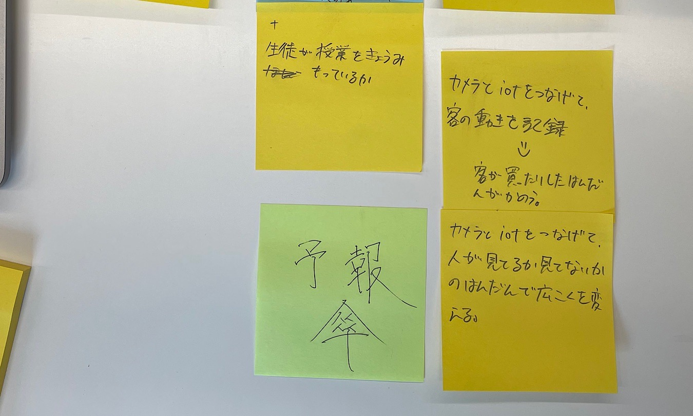

ホーム
デザイン演習Ⅲ・Ⅳ
デザイン演習Ⅲ・Ⅳ 第１回
IoTについて
IoTとは何か
IoTとは、"Internet of Things"（モノのインターネット）の略で、
インターネットに接続されたデバイスや機器が相互に通信し、
情報を共有することができるシステム。
例えば、家庭内のスマートデバイスや工場の機器、自動車などがそれに当たる。
IoTの技術は、様々な分野で利用されている。
IoTで何ができそうか？グループワーク

IoTで何ができそうか？自分で考えたアイディア